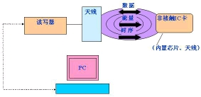

关于RFID射频技术应用(校园卡)的调研
关于RFID射频技术应用(校园卡)的调研
本次新生研讨课上，我了解了物联网中传输、应用与感知相关技术，不禁联想到运用RFID技术的校园卡及其系统，也可称为一个物联网，于是对其原理进行调研与探究。
1. RFID技术原理（引自百度百科）
无线射频识别技术通过无线电波不接触快速信息交换和存储技术，通过无线通信结合数据访问技术，然后连接数据库系统，加以实现非接触式的双向通信，从而达到了识别的目的。
RFID技术的基本工作原理并不复杂：标签进入阅读器后，接收阅读器发出的射频信号，凭借感应电流所获得的能量发送出存储在芯片中的产品信息（Passive Tag，无源标签或被动标签），或者由标签主动发送某一频率的信号（Active Tag，有源标签或主动标签），阅读器读取信息并解码后，送至中央信息系统进行有关数据处理。
一套完整的RFID系统， 是由阅读器与电子标签也就是所谓的应答器及应用软件系统三个部分所组成，其工作原理是阅读器（Reader）发射一特定频率的无线电波能量，用以驱动电路将内部的数据送出，此时Reader便依序接收解读数据， 送给应用程序做相应的处理。
2. 校园卡
校园卡（标签）与读卡器（reader）之间通过无线电波来完成读写操作，而其内部结构可以称得上一台计算机，可以进行数据输入，处理，输出的操作。
然而校园卡本身无电源，当读写器对卡进行读写操作时，读写器发出的信号由两部分叠加组成：一部分是电源信号，给“计算机”供电。另一部分则是指令和数据信号，指挥“计算机”完成数据的读取、修改、储存等，并返回信号给读写器,完成一次读写操作。
当然作为一个计算机，校园卡也有其存储，不同的扇区储存着数据如密码和控制语句，一般总容量为8Kbit。

3. 读写器
读写器（刷卡器）与服务器连接，每次与卡交互时向服务器发出请求，服务器根据数据库中这个刷卡器所拥有的权限分配给其加钱减钱的权限。当刷卡时，刷卡器采集到卡的数据，并根据其权限向服务器发出刷卡消费或者充值的命令，服务器接收到之后将数据修改到数据库。
总体结构上可以采用单片机作为处理模块，再接入与卡交互的感知模块。单片机可以用C语言编程，定义函数和结构体完成特定操作
4.一卡通系统
除了以上两个部分，一个完整的物联网一卡通系统，还要要有网络上的数据库和服务器。
服务器负责接收刷卡器来的命令并解析，然后将执行好的数据更新到数据库，然后返回给刷卡器一个结果由刷卡器来显示。
数据库中有用户表存放着包括管理员在内的多个角色的数据，每个人对应一个唯一的卡号，同样每个卡号也只能由一个人使用，这样无论是卡还是刷卡器都无法通过修改自身里面的信息修改身份、钱等等的信息，所有这些信息只能由服务器修改就确保了数据的安全性。